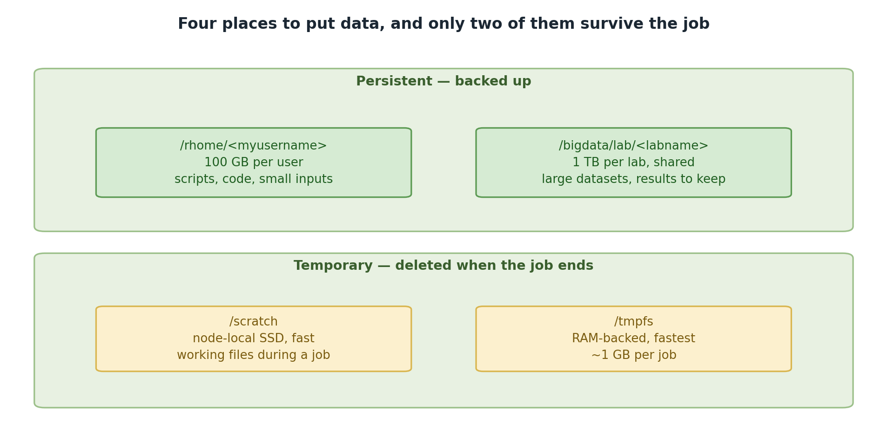
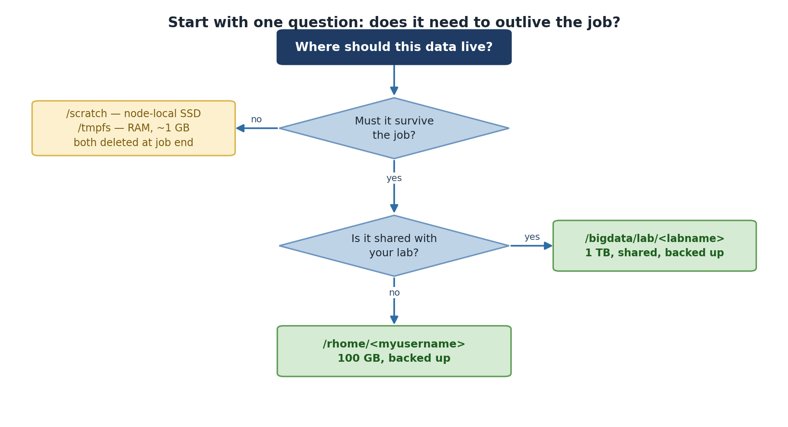
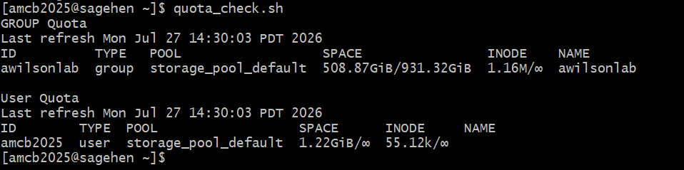
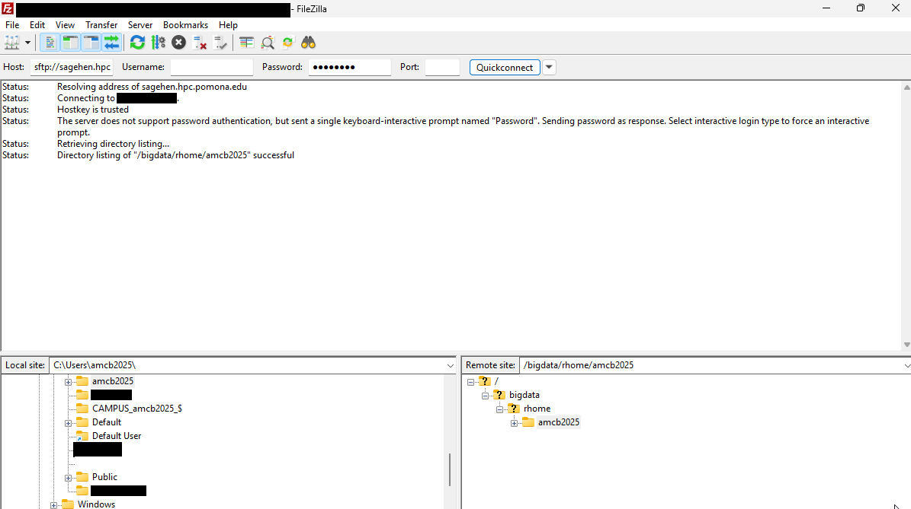
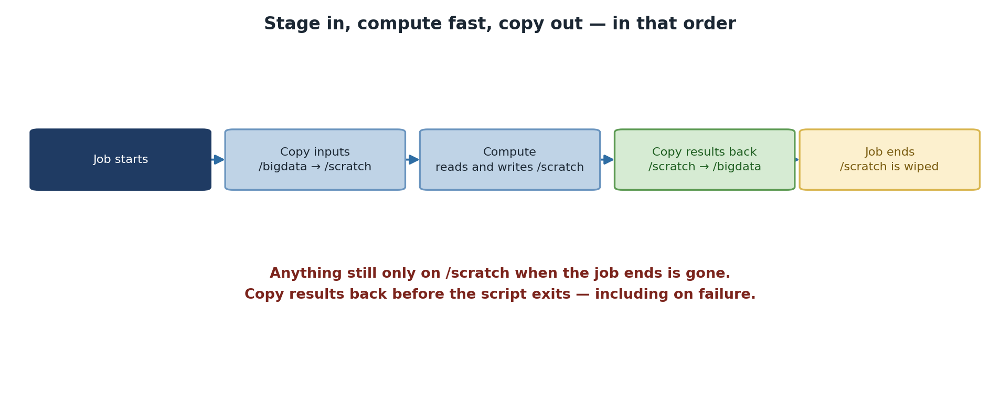

All in One View
Content from Storage Architecture Overview
Last updated on 2026-08-27 | Edit this page
Overview
Questions
- What storage options are available on Sagehen HPC?
- Where should I store different types of data?
- What are the differences between persistent and temporary storage?
Objectives
After completing this episode, participants will be able to:
- Describe the four main storage locations on Sagehen
- Explain the persistence and availability of each filesystem
- Choose the appropriate storage location for different use cases
Sagehen HPC’s Storage System
Sagehen uses a hierarchical storage system designed to balance performance, reliability, and cost. The four main storage locations are:
-
/rhome/<myusername>– Home directory (persistent, lab-shared quota) -
/bigdata/lab/<labname>– Lab shared storage (persistent, 1TB quota per lab) -
/scratch/$SLURM_JOB_ID– Job-local temporary SSD (deleted when job completes) -
/tmpfs/$SLURM_JOB_ID– RAM-backed temporary storage (deleted when job completes)
Sagehen Storage Architecture
+-- Persistent Storage (survives job termination)
| +-- /rhome/<myusername> (Home, BeeGFS, weekly snapshots)
| +-- /bigdata/lab/<labname> (Lab shared, BeeGFS, weekly snapshots)
|
+-- Temporary Storage (deleted when job completes)
+-- /scratch/$SLURM_JOB_ID (SSD-backed, very fast)
+-- /tmpfs/$SLURM_JOB_ID (RAM-backed, fastest)
Storage Performance Tiers
-
Fastest:
/tmpfs(RAM-backed, node-local) -
Very Fast:
/scratch(SSD-backed) -
Standard:
/rhomeand/bigdata(network storage)
Use temporary storage for intermediate data during jobs to improve performance 5-10x.
Persistent Storage
Home Directory: /rhome/<myusername>
Your personal storage space, accessible from all nodes and OnDemand.
- Quota: Shared with lab (included in 1TB lab quota)
- Persistence: Permanent
- Backup: Weekly snapshots (contact its-hpc@pomona.edu for recovery)
- Filesystem: BeeGFS distributed filesystem
- Best for: Source code, config files, small datasets, job scripts
Temporary Storage
Choosing the Right Location
Will this data survive beyond my current job?
+-- YES
| +-- Will lab members need access?
| +-- YES --> /bigdata/lab/<labname>
| +-- NO --> /rhome/<myusername>
+-- NO (temporary data)
+-- Does data fit in allocated memory?
+-- YES --> /tmpfs (fastest)
+-- NO --> /scratch (very fast)BeeGFS Filesystem
All Sagehen storage uses BeeGFS, a parallel distributed filesystem.
Key implication: the standard du command may be inaccurate.
Always use du --apparent-size or the
quota_check.sh script for accurate measurements.
Challenge: Storage Selection
For each scenario, choose the best storage location and justify your answer:
- A 500MB raw data file that your entire lab will analyze
- A 4-hour job processing 100GB of data and generating 50GB of results
- Python scripts and notebooks for future reference
- A job using 48GB of memory that needs a temporary 40GB working directory
-
/bigdata/lab/<labname>– Needs lab-wide access and persistence -
/scratchfor working data, copy results back to/rhome– Fast I/O, too large for RAM -
/rhome/<myusername>– Personal, small, needs permanent persistence -
/tmpfs– Fits in allocated memory, fastest possible I/O for single-node work
- Sagehen provides four storage locations with different persistence and performance characteristics
-
/rhomeand/bigdataare persistent and share a 1TB lab quota on BeeGFS -
/scratchand/tmpfsare temporary, deleted when the job completes - Choose storage based on persistence needs, access patterns, and performance requirements
Content from Checking and Managing Quotas
Last updated on 2026-08-27 | Edit this page
Overview
Questions
- How much storage can I use on Sagehen HPC?
- How do I check my current storage usage?
- Why does
dugive inaccurate results on BeeGFS?
Objectives
After completing this episode, participants will be able to: - Use
quota_check.sh to monitor storage usage - Understand the
difference between apparent size and block size on BeeGFS - Use
du with the correct flags for accurate measurements -
Identify large files and directories consuming space
Quota Structure on Sagehen HPC
Both /rhome/<myusername> and
/bigdata/lab/<labname> share a lab-based
quota:
- Quota per lab: 1TB combined across home + lab storage
- Shared responsibility: All lab members share this quota
- Enforcement: Hard limit – cannot write new files if exceeded
- Exceptions: Request temporary increase by contacting its-hpc@pomona.edu
Lab ABC (quota: 1TB = 1024GB)
+-- /rhome/alice (150 GB)
+-- /rhome/bob (120 GB)
+-- /rhome/charlie (180 GB)
+-- /bigdata/lab/abc (574 GB)
Total Used: 1024 GB (at limit!)Temporary storage (/scratch and /tmpfs)
does not count against your lab quota.

Using quota_check.sh (Recommended)
Sagehen provides a dedicated script that accounts for BeeGFS:
Real output — a BeeGFS quota table with a GROUP row (your lab’s shared pool) and a User row:

quota_check.sh reports the lab’s
group usage against the shared pool limit, then your per-user usage. The
group limit is what’s enforced.Note the enforcement model: the group (lab) row carries the hard limit on the shared pool; the user row typically shows no separate hard cap.
Using du Correctly on BeeGFS
The du command requires --apparent-size for
accuracy on BeeGFS:
BASH
# Inaccurate (reports block usage)
du -sh /rhome/<myusername>
Result: 156 GB
# Accurate (reports actual data size)
du -sh --apparent-size /rhome/<myusername>
Result: 150 GBAlways use du --apparent-size on
Sagehen.
Finding Large Files and Directories
Largest directories:
Largest individual files:
What Happens When You Exceed Quota
At 100% quota, you cannot write new files:
You can still read files, list directories, and run jobs that only read from disk. But you cannot write, modify, or save job outputs.
To request a quota increase, contact its-hpc@pomona.edu with your lab name, justification, specific data size needed, and cleanup timeline.
Challenge: Check Your Quota
- Use
quota_check.shfor official quota monitoring on Sagehen - Always use
du --apparent-sizeon BeeGFS for accurate size measurements - Your lab shares a 1TB quota across all members and both
/rhomeand/bigdata - You cannot write files if quota is exceeded – monitor regularly
- Temporary storage (
/scratch,/tmpfs) does not count against quota
Content from Quota Cleanup Strategies
Last updated on 2026-08-24 | Edit this page
Overview
Questions
- How do I free up space when approaching my quota?
- What are effective strategies for reducing storage usage?
- How do I troubleshoot common quota issues?
Objectives
After completing this episode, participants will be able to: - Implement regular cleanup routines - Use compression to reduce storage usage - Identify and remove redundant files - Troubleshoot common quota problems
Regular Cleanup
Run a monthly maintenance routine:
Compression
Compress old data to reclaim space:
BASH
tar czf project_archive.tar.gz project_name/
# Check compression ratio
du --apparent-size -h project_archive.tar.gz
du --apparent-size -h project_name/Typical compression for text/CSV data: 5-20x smaller.
Identifying Redundancy
Remove backup and temporary files:
BASH
# Find backup files
find /rhome/<myusername> -name "*.bak" -o -name "*_old" -o -name "*~"
# Remove them
find /rhome/<myusername> -name "*.bak" -deleteAvoid storing multiple manual copies of the same project. Use git version control instead:
Monitoring and Alerts
Your lab receives email notifications at 80%, 95%, and 100% quota usage. You can also monitor quota during file transfers:
Quota Management Checklist
-
Monthly: Run
quota_check.shand review usage - Quarterly: Clean up files older than 6 months
- After projects: Archive and remove old project directories
- Before large jobs: Verify available quota
-
For temporary work: Use
/scratch(does not count against quota)
Troubleshooting Common Issues
“Disk quota exceeded” but du shows space
Your lab’s combined quota may be full even if your home looks fine.
Run quota_check.sh to see the combined usage. Also check
hidden directories:
du reports different size than quota_check.sh
You likely forgot the --apparent-size flag. Without it,
du reports block usage on BeeGFS, which differs from actual
data size.
Deleted files but usage unchanged
A running process may still hold the file handle open:
Example:
Project directory: 10 GB
Current quota: 1024 GB
Percentage used: 10/1024 = 0.98%Actions to consider: delete .bak files, compress older
project directories, move shared data to /bigdata, remove
duplicate datasets.
- Regular cleanup prevents quota-related disruptions
- Compression can reduce text-based data by 5-20x
- Use git instead of manual versioning to avoid duplicate copies
- Always use
du --apparent-sizeto get accurate sizes on BeeGFS - Hidden directories like
.cacheand.localcan consume significant space
Content from Transferring Files with OnDemand
Last updated on 2026-08-27 | Edit this page
Overview
Questions
- How do I transfer small files without the command line?
- What are the limitations of web-based file transfer?
Objectives
After completing this episode, participants will be able to:
- Access the OnDemand file manager interface
- Upload and download files through the web browser
- Create directories and organize files
- Understand when web transfer is appropriate vs. other methods
OnDemand Web Interface
The OnDemand web interface at https://ondemand.hpc.pomona.edu provides graphical file management without command-line tools.
Best for: Small files (under 500 MB), interactive browsing, one-off transfers.
Limitations: File size limit (~2 GB per upload), slower than rsync, not suitable for batch operations.
When to Use Web vs. Command-Line
Use OnDemand for small files under 500 MB and interactive file browsing. Use rsync for files larger than 500 MB, batch operations, and automated transfers.
Accessing OnDemand
- Navigate to
https://ondemand.hpc.pomona.edu - Login with your Pomona College credentials
- Approve the Duo two-factor authentication push
- Click Files in the navigation menu
The file manager shows your home directory by default with buttons for Home, New File, New Dir, and Upload.
Uploading Files
- Navigate to the destination folder (e.g.,
/rhome/<myusername>) - Click the Upload button
- Select file(s) from your computer
- Wait for the progress bar to complete
For multiple files, hold Ctrl (Windows) or Cmd (Mac) to select several at once. To upload a directory structure, create the folders on Sagehen HPC first, then upload files into each.
For files larger than 500 MB, use rsync instead:
Downloading Files
- Locate the file in the file manager
- Right-click and select Download
- The file saves to your Downloads folder
For directories, create a compressed archive first via SSH, then download the archive:
Organizing Files
- Create directory: Click “+ New Dir”, enter name
- Create file: Click “+ New File”, enter name
- Delete: Right-click, select Delete (usually permanent)
- Rename: Right-click, select Rename (if available)
Challenge: Upload and Download
- Create a folder structure on Sagehen:
/rhome/<myusername>/workshop/data//rhome/<myusername>/workshop/results/
- Upload any file from your computer to the
data/folder - Refresh the browser (F5) and verify it appears
- Download the file back to your computer and confirm it matches
After completing the challenge, you should see your uploaded file in
the OnDemand file manager under
/rhome/<myusername>/workshop/data/ with the correct
file size. The downloaded copy should be identical to the original.
If the file does not appear after upload, try refreshing the page. If upload fails, check that the file is under 2 GB and your quota is not exceeded.
- OnDemand at https://ondemand.hpc.pomona.edu provides GUI-based file management
- Suitable for small files (under 500 MB) and interactive browsing
- Always refresh the browser after uploads to verify success
- Use rsync for large files or batch operations
Content from SFTP Setup with FileZilla
Last updated on 2026-08-27 | Edit this page
Overview
Questions
- What is FileZilla and why use it for file transfers?
- How do I install and configure FileZilla?
- How do I connect to Sagehen HPC with Duo authentication?
Objectives
After completing this episode, participants will be able to: - Install FileZilla on their personal computer - Connect to Sagehen’s SFTP server with Duo authentication - Save connection settings in Site Manager for future use
Why FileZilla?
FileZilla is a free, open-source graphical SFTP client with side-by-side local and remote directory views, drag-and-drop transfers, and resume capability for interrupted transfers.
FileZilla vs. rsync
Choose FileZilla for interactive transfers under 1 GB when you want a graphical interface and to browse both directories simultaneously. Choose rsync for large files over 1 GB, batch transfers, and automated workflows.
Installing FileZilla
Windows
- Visit filezilla-project.org
- Download and run the installer
- Follow the installation wizard
macOS
- Download the macOS version from filezilla-project.org
- Open the .dmg file
- Drag FileZilla to Applications
Connecting to Sagehen HPC
Quick Connect
In the Quick Connect bar at the top of FileZilla:
-
Host:
sagehen.hpc.pomona.edu - Username: Your Pomona username
- Password: Your Pomona password
-
Port:
22
Click Quickconnect. When prompted for Duo 2FA, approve the push notification on your phone. The remote file panel then shows your home directory.
Site Manager (Recommended)
For regular connections, save a site profile:
- Menu > File > Site Manager (or Ctrl+S)
- Click New Site, name it “Sagehen”
- Set Host:
sagehen.hpc.pomona.edu - Protocol: SFTP - SSH File Transfer Protocol
- Logon Type: Ask for password
- User: your username
- Click Connect
This saves the connection so you only need to click Connect and enter your password each time.
Duo Authentication Flow
- Enter username and password in FileZilla
- SSH connection initiates
- Duo push notification arrives on your phone
- Approve on your phone
- Connection established
If no Duo prompt appears, check your phone for delayed notifications, try reconnecting, or contact its-hpc@pomona.edu.
Challenge: Connect to Sagehen HPC
- Install FileZilla on your computer
- Connect using Quick Connect:
- Host:
sagehen.hpc.pomona.edu, Port: 22 - Enter your Pomona credentials
- Approve Duo 2FA
- Host:
- Verify the remote panel shows your home directory files
- Save the connection in Site Manager for future use
FileZilla should show “Connected to sagehen.hpc.pomona.edu” in the
title bar and display your files from
/rhome/<myusername> in the remote panel. If
connection fails, verify the hostname is exactly
sagehen.hpc.pomona.edu, port is 22, and check for Duo
notification on your phone.
- FileZilla is a free graphical SFTP client for interactive file transfers
- Connect to
sagehen.hpc.pomona.eduon port 22 using SFTP protocol - Duo 2FA is required for all connections
- Save connection settings in Site Manager for convenience
Content from FileZilla File Operations
Last updated on 2026-08-27 | Edit this page
Overview
Questions
- How do I transfer files using FileZilla’s drag-and-drop interface?
- How do I monitor transfer progress?
- How do I manage files on Sagehen HPC through FileZilla?
Objectives
After completing this episode, participants will be able to: - Transfer files using drag-and-drop - Upload and download directories - Monitor transfer progress and speed - Manage remote files (rename, delete, create directories)
Navigating Filesystems
The left panel shows your local computer; the right panel shows Sagehen. Double-click folders to enter them, or type a path directly in the path field.

To access lab storage, type /bigdata/lab/<labname>
in the remote path field and press Enter.
Uploading Files
Drag and drop: Locate a file in the local panel (left), drag it to the remote panel (right), and release. The transfer begins immediately.
Right-click menu: Right-click a file in the local panel and select Upload.
Multiple files: Hold Ctrl (or Cmd on Mac) and click to select multiple files, then drag them all to the remote panel. FileZilla queues and transfers them in sequence.
Directories: Right-click a directory in the local panel and select Upload. FileZilla uploads the directory and all its contents, preserving the folder structure.
Downloading Files
Drag files from the remote panel (right) to the local panel (left), or right-click a remote file and select Download.
Transfer Monitoring
The bottom panel shows active and queued transfers with real-time speed and progress:
Speed: 12.3 MB/s
Time remaining: 2 minutes 15 seconds
Data transferred: 100 MB / 250 MB (40%)Typical speeds: 1-5 MB/s (slower connection), 5-20 MB/s (good), 20+ MB/s (fast).
File Management
- Create directory: Right-click in remote panel > Create directory
- Rename: Right-click file > Rename
- Delete: Right-click file > Delete (permanent, use with caution)
Verifying Transfers
After upload, compare file sizes between local and remote:
Troubleshooting
- Transfer hangs: Wait, then try Pause/Resume. For very large files, use rsync instead
- Files not appearing: Press F5 to refresh the remote view
-
Connection refused: Verify hostname is
sagehen.hpc.pomona.eduport 22 - Authentication failed: Verify Pomona credentials, check for Duo notification
Challenge: Round-Trip Transfer
- Navigate the local panel to a file on your computer (1-100 MB)
- In the remote panel, create a directory:
filezilla_test - Upload the file to
filezilla_test/ - Note the transfer speed from the progress panel
- Download the file back and verify the size matches
Expected result: the file appears in
/rhome/<myusername>/filezilla_test/ with matching
size. Transfer speed depends on your network – typical range is 5-15
MB/s. The downloaded copy should be identical to the original.
- Drag-and-drop makes FileZilla transfers intuitive for uploads and downloads
- The transfer queue shows real-time progress, speed, and estimated time
- Compress files before transfer to reduce time significantly
- Good for interactive transfers up to several hundred MB; use rsync for larger files
Content from Introduction to rsync
Last updated on 2026-08-27 | Edit this page
Overview
Questions
- What is rsync and why is it preferred for large file transfers?
- How do I upload and download files with rsync?
- What do the common rsync flags mean?
Objectives
After completing this episode, participants will be able to:
- Explain rsync’s advantages over other transfer methods
- Use rsync to upload files to Sagehen HPC
- Use rsync to download files from Sagehen
- Choose appropriate flags for different transfer scenarios
Why rsync?
rsync (remote synchronization) is a command-line tool designed for efficient, reliable file transfer. Key advantages:
- Incremental: Only transfers changed data on subsequent runs
-
Resumable: Can resume interrupted transfers with
-Pflag -
Efficient: Compresses data during transfer with
-zflag - Scriptable: Ideal for automated and batch operations
rsync comes pre-installed on macOS and Linux.
Windows Users: Git Bash Does NOT Include rsync
If you’ve been following along in Git Bash, rsync will
fail with command not found – Git Bash simply doesn’t ship
it, and rsync must be installed on both ends of a transfer.
Your options:
-
Use WSL (Windows Subsystem for Linux): install it
once with
wsl --installin an Administrator PowerShell; every command in this episode then works unchanged inside WSL. -
Skip rsync locally and use
scpor FileZilla (earlier episodes) for Windows-to-Sagehen transfers. - rsync still works on Sagehen itself (e.g. copying
between
/rhomeand/bigdatain an SSH session), so the server-side examples below work for everyone.
Basic Syntax
Upload to Sagehen:
Download from Sagehen:
Essential Flags
| Flag | Meaning | When to Use |
|---|---|---|
-a |
Archive mode (preserves permissions, timestamps) | Always |
-v |
Verbose output | Debugging |
-h |
Human-readable sizes (MB, GB) | Always |
-P |
Show progress + keep partial files for resume | Large files |
-r |
Recursive (directory contents) | Directories |
-z |
Compress during transfer | Slow networks |
Trailing Slashes Matter
BASH
# WITH trailing slash: copies CONTENTS of myproject into /dest/
rsync -avhP ~/myproject/ user@host:/dest/
# WITHOUT trailing slash: copies the DIRECTORY itself, creating /dest/myproject/
rsync -avhP ~/myproject user@host:/dest/This is the most common rsync mistake. Use trailing slashes when you want to transfer directory contents.
Uploading a Single File
Output:
mydata.csv
50,000,000 100% 15.23MB/s 0:00:03 (xfr#1, to-chk=0/1)
sent 50,001,234 bytes received 35 bytes 13,333,664 bytes/sec
total size is 50,000,000 speedup is 1.00Uploading a Directory
BASH
rsync -avhPr ~/myproject/ <myusername>@sagehen.hpc.pomona.edu:/rhome/<myusername>/projects/myproject/All files and subdirectories are transferred recursively.
Downloading Files
Resuming Interrupted Transfers
The -P flag is essential. If a transfer is interrupted,
simply run the same command again:
BASH
# Original command (interrupted by network drop)
rsync -avhP ~/large_file.tar.gz <myusername>@sagehen.hpc.pomona.edu:/rhome/<myusername>/
# Resume by running the exact same command
rsync -avhP ~/large_file.tar.gz <myusername>@sagehen.hpc.pomona.edu:/rhome/<myusername>/rsync detects the existing partial file and resumes from where it stopped.
Incremental Synchronization
On the second run, rsync only transfers new or changed files:
BASH
# First run: transfers all files
rsync -avhPr ~/myproject/ <myusername>@sagehen.hpc.pomona.edu:/rhome/<myusername>/myproject/
# Add a new file locally, then run again
rsync -avhPr ~/myproject/ <myusername>@sagehen.hpc.pomona.edu:/rhome/<myusername>/myproject/
# Only the new file transfers; unchanged files are skippedChallenge: First rsync Transfer
-
Create a 10 MB test file:
-
Upload to Sagehen:
-
Verify on Sagehen:
What was your transfer speed? Does the file size match?
Expected output:
test_data.bin
10,485,760 100% 8.34MB/s 0:00:01 (xfr#1, to-chk=0/1)On Sagehen, ls -lh should show 10M. The file transferred
completely.
- rsync is the fastest and most reliable method for large file transfers
- Always use
-Pfor large files to enable resume capability - The trailing slash on source paths is critical:
source/vssource - rsync automatically skips unchanged files on subsequent runs
- Use
-avhPas your standard flag combination
Content from Advanced rsync Workflows
Last updated on 2026-08-24 | Edit this page
Overview
Questions
- How do I exclude certain files from rsync transfers?
- How do I safely delete remote files not present locally?
- How can I use rsync in SLURM job scripts?
Objectives
After completing this episode, participants will be able to: - Use exclude patterns to skip unwanted files - Preview operations with dry-run before executing - Safely use the –delete flag with proper safeguards - Integrate rsync into SLURM job scripts
Exclude Patterns
Skip files you do not want to transfer:
BASH
rsync -avhPr --exclude='.git' --exclude='*.pyc' --exclude='__pycache__' \
~/myproject/ <myusername>@sagehen.hpc.pomona.edu:/rhome/<myusername>/myproject/Common exclusions:
Include Only Specific Files
Transfer only matching file types by combining include and exclude:
Dry Run (Preview)
See what rsync would do without actually transferring anything:
BASH
rsync -avhPr --dry-run ~/myproject/ <myusername>@sagehen.hpc.pomona.edu:/rhome/<myusername>/myproject/Output includes (DRY RUN) and shows files that would
transfer. Always use this before any destructive operation.
Deleting Remote Files
The --delete flag removes files from the destination
that do not exist in the source:
BASH
# DANGEROUS: Always dry-run first!
rsync -avhPr --delete --dry-run ~/myproject/ <myusername>@sagehen.hpc.pomona.edu:/rhome/<myusername>/myproject/
# If the dry-run output looks correct, run without --dry-run
rsync -avhPr --delete ~/myproject/ <myusername>@sagehen.hpc.pomona.edu:/rhome/<myusername>/myproject/Warning: –delete Can Destroy Data
Running --delete with an empty source directory will
delete everything on the remote side. Always preview with
--dry-run first.
Compression
For slow connections, compress data during transfer:
Compression helps for text-heavy files but provides no benefit for already-compressed formats (images, videos, archives).
Bandwidth Limiting
Avoid saturating your network by limiting transfer speed:
BASH
rsync -avhPr --bwlimit=10m ~/myproject/ <myusername>@sagehen.hpc.pomona.edu:/rhome/<myusername>/myproject/Units: k = kilobytes/s, m =
megabytes/s.
Rsync in Job Scripts
Use rsync to stage data into fast temporary storage during SLURM jobs:
BASH
#!/bin/bash
#SBATCH --job-name=data_process
#SBATCH --time=04:00:00
# Copy input to fast scratch
rsync -avhP /rhome/<myusername>/input.dat /scratch/$SLURM_JOB_USER/$SLURM_JOB_ID/
# Run computation on scratch
cd /scratch/$SLURM_JOB_USER/$SLURM_JOB_ID/
./myanalysis input.dat
# Copy results back to permanent storage
rsync -avhP output.dat /rhome/<myusername>/results/Common Mistakes
-
Wrong trailing slash:
rsync ~/myproject host:/dest/creates/dest/myproject/, whilersync ~/myproject/ host:/dest/puts contents directly in/dest/ -
Forgetting -P: Without
-P, large interrupted transfers cannot resume - Using –delete carelessly: Always dry-run first
-
Forgetting -r for directories: Without
-r, subdirectories are not transferred (though-aimplies-r)
Challenge: Selective Sync with Dry Run
-
Create a local project with mixed files:
-
Dry-run an rsync excluding
.pycfiles: Verify that
main.pycis not listed in the dry-run outputRun without
--dry-runto actually transfer
The dry-run should show data/data.txt and
scripts/main.py but not scripts/main.pyc. The
(DRY RUN) tag confirms no files were actually transferred.
Running without --dry-run completes the transfer of only
the non-excluded files.
- Use
--excludepatterns to skip unwanted files like.git,.pyc, and caches - Always use
--dry-runbefore--deleteto prevent accidental data loss - Compression (
-z) helps on slow networks but not for already-compressed files - rsync integrates well into SLURM job scripts for staging data to fast storage
Content from Using Scratch Storage in Jobs
Last updated on 2026-08-27 | Edit this page
Overview
Questions
- Why should I use temporary storage during jobs?
- How do I access
/scratchin my job scripts? - How do I safely copy data in and out of scratch?
- What are the failure modes that lose results, and how do I prevent them?
Objectives
After completing this episode, participants will be able to: - Explain the performance benefits of scratch storage - Access scratch storage using SLURM environment variables - Implement the copy-in, compute, copy-out pattern - Avoid losing results by copying back before the job ends - Diagnose I/O bottlenecks that scratch can fix
Why Use Scratch?
Scratch storage provides significant performance advantages because the data lives on local NVMe SSDs inside the compute node, not on the cluster’s shared NFS mounts:
/rhome or /bigdata: ~20-50 MB/s (network filesystem, contended)
/scratch: ~100-300 MB/s (local SSD, dedicated to your job)For a job reading 10 GB of data, this means completing in 30-50
seconds on scratch versus 200+ seconds on /rhome: a
4-7x speedup. For machine learning, simulation, and any
pipeline that re-reads the same files thousands of times during
training, the cumulative savings are even larger.
The performance gap matters most when many jobs are reading from
/bigdata simultaneously. BeeGFS spreads data across several
storage servers, but that bandwidth is still shared between everyone
using the filesystem. If five jobs on five different nodes are all
reading from /bigdata/lab/<labname>/ at once, each
gets a fraction of the available bandwidth. /scratch is
local: each job has the full disk to itself.

Scratch Is Non-Persistent
Data on /scratch is deleted when your job
completes. Always copy results back to /rhome or
/bigdata before the job ends. If you forget, your results
are permanently lost.
There is no “but I had it five minutes ago” recovery. The cleanup is immediate when SLURM marks the job complete. Build the copy-out step into every script that uses scratch, and verify it before requesting time on a long run.
Accessing Scratch in Job Scripts
SLURM provides environment variables for constructing scratch paths:
Full scratch path:
/scratch/$SLURM_JOB_USER/$SLURM_JOB_ID
This per-job directory naming matters. If you used
/scratch/alice/work/ and submitted ten jobs at once, they
would all write to the same directory and trash each other’s
intermediate files. The $SLURM_JOB_ID keeps each job’s
workspace isolated.
The Standard Pattern: Copy-In, Compute, Copy-Out
BASH
#!/bin/bash
#SBATCH --job-name=process_data
#SBATCH --time=04:00:00
#SBATCH --mem=32G
# Set up paths
SCRATCH_DIR=/scratch/$SLURM_JOB_USER/$SLURM_JOB_ID
mkdir -p $SCRATCH_DIR
echo "=== Stage 1: Copy input data to scratch ==="
rsync -avhP /rhome/<myusername>/input/*.dat $SCRATCH_DIR/
echo "=== Stage 2: Run computation ==="
cd $SCRATCH_DIR
./myanalysis *.dat
echo "=== Stage 3: Copy results back ==="
rsync -avhP $SCRATCH_DIR/output*.h5 /rhome/<myusername>/results/
echo "=== Job complete ==="The pattern has three deliberate stages and each carries a lesson. Stage 1 stages all input data so subsequent reads hit local SSD instead of the network. Stage 2 does the work in scratch where I/O is fast. Stage 3 copies results back to persistent storage before the SLURM job ends, ensuring nothing is lost when scratch is cleaned.
rsync -avhP is preferred over cp because it
shows progress, preserves attributes, and is restartable if it gets
interrupted. The -h makes sizes human-readable and
-P shows progress and supports partial transfers.
Checking Available Space
Before copying large datasets, verify space is available:
BASH
SCRATCH_DIR=/scratch/$SLURM_JOB_USER/$SLURM_JOB_ID
mkdir -p $SCRATCH_DIR
AVAIL_SPACE=$(df $SCRATCH_DIR | tail -1 | awk '{print $4}')
NEEDED_SPACE=$((5 * 1024 * 1024)) # 5 GB in KB
if [ $AVAIL_SPACE -lt $NEEDED_SPACE ]; then
echo "ERROR: Not enough space on scratch"
exit 1
fiThis is most useful for jobs that copy a few hundred GB of data. For smaller jobs, the check is overkill. The key idea: failing fast at job start is much cheaper than failing four hours into a run because scratch filled up halfway through.
Multi-Stage Pipelines
Chain multiple processing stages on scratch to avoid round-tripping through NFS:
BASH
#!/bin/bash
#SBATCH --job-name=pipeline
#SBATCH --time=08:00:00
SCRATCH_DIR=/scratch/$SLURM_JOB_USER/$SLURM_JOB_ID
mkdir -p $SCRATCH_DIR
cd $SCRATCH_DIR
rsync -avhP /rhome/<myusername>/raw_data/ $SCRATCH_DIR/input/
./preprocess input/ -o preprocessed/
./analyze preprocessed/ -o analysis/
# Copy all results back
rsync -avhP analysis/ /rhome/<myusername>/results/analysis/The intermediate preprocessed/ directory never leaves
scratch. It does not need to: the next stage reads it locally. This
pattern is the single biggest performance win you can get from rewriting
a multi-stage pipeline on HPC.
Real-World Example: Machine Learning
BASH
#!/bin/bash
#SBATCH --job-name=train_model
#SBATCH --time=04:00:00
#SBATCH --gpus=1
#SBATCH --mem=32G
SCRATCH=/scratch/$SLURM_JOB_USER/$SLURM_JOB_ID
mkdir -p $SCRATCH
rsync -avhP /rhome/<myusername>/training_data.h5 $SCRATCH/
cd $SCRATCH
python train.py --data training_data.h5 --output model.pkl
# Save results to permanent storage
rsync -avhP model.pkl /rhome/<myusername>/results/For ML training in particular, scratch is essentially mandatory.
PyTorch DataLoaders with num_workers > 0 issue many
parallel reads, and NFS handles parallel reads from one client poorly.
Reading from local SSD avoids GPU starvation entirely.
Failure modes that silently lose results
The two failure modes that bite people, in order of frequency:
The script’s compute step fails, the copy-out step is skipped
(because of set -e or just script flow), and scratch gets
cleaned. Mitigation: always run the copy-out unconditionally. Use a trap
or an if block, but make sure it executes even on
failure.
The job hits its time limit during the compute step. SLURM kills it;
copy-out never runs. Mitigation: budget extra time for copy-out, and
consider a signal directive that gives your script a few
minutes’ warning before the timeout.
Challenge: Scratch Performance Test
Create two job scripts: one writing to /rhome and one to
/scratch:
Without scratch:
BASH
#!/bin/bash
#SBATCH --job-name=no_scratch
#SBATCH --time=00:05:00
cd /rhome/<myusername>
time dd if=/dev/zero of=test_1gb.dat bs=1M count=1024
rm test_1gb.datWith scratch:
BASH
#!/bin/bash
#SBATCH --job-name=with_scratch
#SBATCH --time=00:05:00
SCRATCH=/scratch/$SLURM_JOB_USER/$SLURM_JOB_ID
mkdir -p $SCRATCH
cd $SCRATCH
time dd if=/dev/zero of=test_1gb.dat bs=1M count=1024Compare the “real” time from each. How much faster was scratch?
Typical results:
Without scratch: real 0m12.456s
With scratch: real 0m3.821s
Improvement: 3.3x fasterFor a 4-hour I/O-intensive job, this difference multiplies significantly: 12 minutes saved per GB of throughput, or roughly an hour saved per 5 GB of working set.
The result varies with cluster load: when /bigdata is
contended by many simultaneous users, the gap can stretch to 10x or
more.
Challenge: Diagnose a Lost Result
A graduate student reports that her 6-hour SLURM job ran successfully
(final output line: “Analysis complete”), but the result file
analysis_summary.csv is nowhere to be found in her home
directory. List two likely explanations and how to fix each for next
time.
Explanation 1: the script wrote to
/scratch/$USER/$SLURM_JOB_ID/ but never copied the result
back to /rhome or /bigdata. The file was
deleted when SLURM cleaned scratch. Fix: add an rsync step
at the end of the script. Check the SLURM output file
(slurm-JOBID.out) for any errors near the end.
Explanation 2: the script wrote to a relative path
(./analysis_summary.csv) without cd-ing first.
The file is in whatever directory sbatch was invoked from,
which may not be where she is looking. Fix: use absolute paths or
explicit cd at the start.
In both cases,
find /rhome/$USER /bigdata -name "analysis_summary.csv" -mtime -1
will quickly locate any candidate file from the last 24 hours.
- Scratch (
/scratch/$SLURM_JOB_USER/$SLURM_JOB_ID) provides 4-7x faster I/O than /rhome - Scratch is deleted when your job completes; always copy results back unconditionally
- Use the copy-in, compute, copy-out pattern for all I/O-intensive jobs
- Multi-stage pipelines should keep intermediate files on scratch, not round-trip through NFS
- Check available space before copying large datasets to fail fast
- Use a trap with
--signalto copy results out even if the job hits its time limit - ML training is essentially mandatory on scratch because of DataLoader parallel reads
Content from Using tmpfs RAM Storage
Last updated on 2026-08-27 | Edit this page
Overview
Questions
- When should I use
/tmpfsinstead of/scratch? - How do I use RAM-backed storage safely in job scripts?
- What are the limitations of tmpfs?
Objectives
After completing this episode, participants will be able to: -
Explain the difference between /scratch and
/tmpfs - Use /tmpfs for memory-intensive I/O
workloads - Account for memory overhead when sizing tmpfs usage -
Implement defensive patterns to prevent data loss
What Is tmpfs?
/tmpfs is RAM-backed storage – the fastest storage
available on Sagehen. Data is stored directly in node memory, providing
speeds over 1000 MB/s compared to 100-300 MB/s for scratch.
Key constraints: - Limited to your job’s memory allocation - Single compute node only (not multi-node) - Deleted immediately when job terminates
When to Use tmpfs vs. Scratch
Does your working data fit in allocated memory?
+-- YES, and single-node job
| +-- Use /tmpfs (fastest)
+-- NO, or multi-node job
+-- Use /scratch (very fast, larger capacity)| Aspect | /scratch | /tmpfs |
|---|---|---|
| Speed | Very fast (SSD) | Fastest (RAM) |
| Size limit | Disk available | Job memory allocation |
| Persistence | Deleted when job completes | Deleted when job completes |
| Multi-node | Yes | No (single node only) |
| Best for | Large working datasets | Small, rapid read-write data |
Using tmpfs in Job Scripts
BASH
#!/bin/bash
#SBATCH --job-name=intensive
#SBATCH --time=01:00:00
#SBATCH --nodes=1
#SBATCH --mem=64G
TMPFS=/tmpfs/$SLURM_JOB_USER/$SLURM_JOB_ID
mkdir -p $TMPFS
# Copy small input (must fit in available memory)
cp /rhome/<myusername>/small_config.json $TMPFS/
# Build index in RAM-backed storage
./build_index /rhome/<myusername>/reference.fasta -o $TMPFS/index/
# Run analysis using fast in-memory data
./analyze -index $TMPFS/index/ -query /rhome/<myusername>/queries.fasta \
-o /rhome/<myusername>/results/output.txtPlanning Memory for tmpfs
When using /tmpfs, account for OS and application
overhead: - If you request --mem=48G, allocate only ~40GB
to tmpfs - Leave headroom for system processes and your application’s
memory usage - Monitor with free during development
runs
Defensive Job Script Pattern
Always ensure results are copied back before the job ends:
BASH
#!/bin/bash
#SBATCH --job-name=safe_tmpfs
#SBATCH --time=02:00:00
#SBATCH --mem=32G
set -e # Exit on any error
TMPFS=/tmpfs/$SLURM_JOB_USER/$SLURM_JOB_ID
HOME_DIR=/rhome/<myusername>
RESULTS=$HOME_DIR/results_$(date +%Y%m%d_%H%M%S)
mkdir -p $TMPFS $RESULTS
# Trap errors
trap 'echo "ERROR at line $LINENO"; exit 1' ERR
# Computation in tmpfs
cd $TMPFS
./analysis > output.dat
# CRITICAL: Copy before job ends
rsync -avhP $TMPFS/output.dat $RESULTS/ || { echo "Copy failed!"; exit 1; }
echo "Success: Results saved to $RESULTS"Common Mistakes
Exceeding memory allocation
If your data plus application memory exceeds the --mem
allocation, the job will be killed by SLURM. Plan conservatively.
Challenge: Design a tmpfs Job Script
Write a job script for this scenario: You have a 5 GB reference index that needs rapid random access during a 1-hour analysis. The analysis itself uses about 8 GB of RAM.
Your script should: 1. Request appropriate memory (index + application + overhead) 2. Copy the index to tmpfs 3. Run the analysis 4. Copy results back to permanent storage
BASH
#!/bin/bash
#SBATCH --job-name=fast_analysis
#SBATCH --time=01:00:00
#SBATCH --nodes=1
#SBATCH --mem=20G # 5GB index + 8GB app + 7GB overhead
set -e
TMPFS=/tmpfs/$SLURM_JOB_USER/$SLURM_JOB_ID
mkdir -p $TMPFS
# Copy index to fast RAM storage
rsync -avhP /rhome/<myusername>/reference_index/ $TMPFS/index/
# Run analysis with RAM-backed index
./analyze -index $TMPFS/index/ -o $TMPFS/results.txt
# Copy results back before job ends
rsync -avhP $TMPFS/results.txt /rhome/<myusername>/results/The 20 GB memory request covers the 5 GB index, 8 GB application, and 7 GB of overhead for the OS and filesystem.
-
/tmpfsis RAM-backed storage providing the fastest I/O on Sagehen HPC - Limited by job memory allocation and restricted to single-node jobs
- Data on
/tmpfsis deleted immediately when the job completes - Always copy results to permanent storage before the job ends
- Account for OS overhead when planning tmpfs memory usage
Content from Data Organization Best Practices
Last updated on 2026-08-27 | Edit this page
Overview
Questions
- How should I organize my data on Sagehen HPC?
- What naming conventions should I follow?
- How do I share data effectively with collaborators?
Objectives
After completing this episode, participants will be able to: - Design efficient directory structures for research projects - Apply meaningful naming conventions - Set correct file permissions for collaboration - Document data with README files
Directory Structure
Organize data hierarchically by project and purpose:
/rhome/<myusername>/
+-- projects/
| +-- project_alpha/
| | +-- data/
| | | +-- raw/ (original, unmodified data)
| | | +-- processed/ (cleaned, transformed data)
| | +-- code/ (scripts and programs)
| | +-- results/ (output, figures, statistics)
| | +-- README.md
| +-- project_beta/
| +-- data/
| +-- code/
| +-- results/
+-- archive/ (compressed completed projects)
/bigdata/lab/<labname>/
+-- group_projects/ (collaborative work)
+-- lab_resources/ (shared reference data)Organizational Principles
Separate data types: Keep raw data separate from processed data and results. This enables clean, reproducible pipelines.
Use meaningful names: dataset_v1.csv is
better than data.csv. Include version numbers or dates:
results_2024_03_05.txt.
Include metadata: Add a README.md in
each project explaining the structure, data sources, and how to
reproduce the analysis.
Archive completed projects: Compress inactive
projects with tar czf project_2023.tar.gz project_2023/ and
move to /bigdata/lab/<labname>/archive/.
File Permissions for Collaboration
When sharing files through /bigdata/lab/<labname>,
set appropriate permissions:
Sharing Data
With Lab Members (Internal)
BASH
mkdir -p /bigdata/lab/<labname>/shared_results
cp analysis_output.csv /bigdata/lab/<labname>/shared_results/
chmod 644 /bigdata/lab/<labname>/shared_results/analysis_output.csvNotify collaborators: “Results available in
/bigdata/lab/<labname>/shared_results/”
Avoiding Duplicate Data
Duplicate files waste quota. Use symbolic links instead of copies for shared reference data:
Find potential duplicates:
Challenge: Design Your Data Organization
For a research project you are planning or working on:
- Sketch a directory structure with folders for raw data, processed data, code, and results
- Write a 3-line README.md explaining the project purpose and where to find key files
- Identify one file or directory that could be moved to
/bigdatafor lab sharing
Example structure:
project_ml_classifier/
+-- data/raw/training_set_v1.csv
+-- data/processed/training_clean_v1.csv
+-- code/preprocessing.py
+-- code/training.py
+-- results/metrics.json
+-- results/figures/
+-- README.mdGood practices demonstrated: separation of raw and processed data, meaningful filenames with versions, code separate from data, README for documentation.
- Organize projects with separate directories for raw data, processed data, code, and results
- Use meaningful filenames with version numbers or dates
- Document projects with README files explaining structure and purpose
- Use
/bigdata/lab/<labname>for collaborative data with appropriate permissions - Use symbolic links instead of copies for shared reference data
Content from Backup and Archival Strategies
Last updated on 2026-08-27 | Edit this page
Overview
Questions
- How do I back up my data on Sagehen HPC?
- When and how should I archive completed projects?
- How do I migrate data between storage locations?
Objectives
After completing this episode, participants will be able to: - Implement a backup strategy using rsync - Archive completed projects to free quota space - Migrate data safely between storage locations - Plan data retention across the research lifecycle
Backup vs. Archive
Backup: Copies for disaster recovery. Sagehen has weekly snapshots – contact its-hpc@pomona.edu for recovery. You should also maintain local backups.
Archive: Long-term storage of completed work. Compressed and moved to free active storage space.
Weekly Rsync Backup
Back up your Sagehen data to your local machine:
BASH
#!/bin/bash
# sagehen_backup.sh
BACKUP_DIR=$HOME/backups/sagehen_$(date +%Y%m%d)
mkdir -p $BACKUP_DIR
rsync -avhPr \
--exclude='*.pyc' --exclude='__pycache__' --exclude='.git' \
<myusername>@sagehen.hpc.pomona.edu:/rhome/<myusername>/ \
$BACKUP_DIR/
echo "Backup complete: $(du -sh $BACKUP_DIR)"Automate with cron (every Sunday at 2 AM):
Git for Code Backup
Use git for version-controlled code backup:
Archiving Completed Projects
When a project is finished, compress and move it:
BASH
# Compress the project
cd /rhome/<myusername>/projects
tar czf project_alpha.tar.gz project_alpha/
# Move to lab archive
mv project_alpha.tar.gz /bigdata/lab/<labname>/archive/project_alpha_20260305.tar.gz
# Verify archive exists, then remove original
ls -lh /bigdata/lab/<labname>/archive/project_alpha_20260305.tar.gz
rm -rf /rhome/<myusername>/projects/project_alpha/
# Check quota improvement
quota_check.shTo restore an archived project:
Safe Data Migration
When moving data between storage locations:
BASH
# Step 1: Dry run
rsync -avhPr --dry-run /rhome/<myusername>/old_project/ /bigdata/lab/<labname>/old_project/
# Step 2: Transfer
rsync -avhPr /rhome/<myusername>/old_project/ /bigdata/lab/<labname>/old_project/
# Step 3: Verify sizes match
du --apparent-size -sh /rhome/<myusername>/old_project/
du --apparent-size -sh /bigdata/lab/<labname>/old_project/
# Step 4: Verify file count
find /rhome/<myusername>/old_project/ -type f | wc -l
find /bigdata/lab/<labname>/old_project/ -type f | wc -l
# Step 5: Delete source only after verification
rm -rf /rhome/<myusername>/old_project/Data Lifecycle Planning
Research data moves through stages:
Active Development --> Active Research --> Archive --> Preservation
/rhome /scratch for /bigdata External
/bigdata computation compressed repository
(months) (6-24 months) (1-2 years) (indefinite)Plan retention for each project: what to keep, where to store it, and when to archive or publish.
Challenge: Create a Migration Plan
You need to move a 50 GB project from
/rhome/<myusername>/old_project/ to
/bigdata/lab/<labname>/archive/. Write the commands
you would use, including:
- Verify source size
- Dry-run the transfer
- Execute the transfer
- Verify destination matches source
- Safely remove the source
BASH
# 1. Verify source size
du --apparent-size -sh /rhome/<myusername>/old_project/
# 2. Dry run
rsync -avhPr --dry-run /rhome/<myusername>/old_project/ /bigdata/lab/<labname>/archive/old_project/
# 3. Transfer
rsync -avhPr /rhome/<myusername>/old_project/ /bigdata/lab/<labname>/archive/old_project/
# 4. Verify (compare size and file count)
du --apparent-size -sh /rhome/<myusername>/old_project/
du --apparent-size -sh /bigdata/lab/<labname>/archive/old_project/
find /rhome/<myusername>/old_project/ -type f | wc -l
find /bigdata/lab/<labname>/archive/old_project/ -type f | wc -l
# 5. Remove source (only after verification passes)
rm -rf /rhome/<myusername>/old_project/
quota_check.sh # Confirm quota freedAlways verify before deleting. If sizes or file counts do not match, investigate before removing the source.
- Maintain local backups of Sagehen data using rsync scripts
- Use git for version-controlled backup of code
- Archive completed projects by compressing and moving to
/bigdata - Always verify size and file count before deleting the source after migration
- Plan data retention across the active, archive, and preservation stages
Content from Choosing a Transfer Method
Last updated on 2026-08-27 | Edit this page
Overview
Questions
- How do I choose the right transfer method for different scenarios?
- What are the tradeoffs between OnDemand, FileZilla, and rsync?
Objectives
After completing this episode, participants will be able to: - Select the appropriate transfer method based on file size and frequency - Apply the decision matrix to real research scenarios - Combine methods effectively in a workflow
Decision Matrix
File Size:
Small (< 50 MB) --> OnDemand
Medium (50 MB - 1 GB) --> FileZilla or rsync
Large (> 1 GB) --> rsync
Frequency:
One-time --> simplest method
Occasional (weekly) --> rsync or FileZilla
Frequent / automated --> rsync scripts
Interface:
Graphical preferred --> OnDemand or FileZilla
Command-line preferred --> rsyncMethod Comparison
| Method | Speed | GUI | Resume | Batch | Best For |
|---|---|---|---|---|---|
| OnDemand | Slow | Yes | No | No | Small files, browsing |
| FileZilla | Medium | Yes | Yes | No | Interactive transfers |
| rsync | Fast | No | Yes | Yes | Large files, automation |
Scenario Examples
Upload 500 MB dataset at project start:
Method: rsync. Time: ~1 minute.
Interactive file management during development: Use FileZilla for visual feedback and easy drag-and-drop of multiple small files.
Download 2 GB results file:
BASH
rsync -avhP <myusername>@sagehen.hpc.pomona.edu:/rhome/<myusername>/results/output.h5 ~/Downloads/Method: rsync. Time: 2-3 minutes.
Sync code between laptop and Sagehen HPC daily:
BASH
# Push changes
rsync -avhPr --exclude='.git' ~/myproject/ <myusername>@sagehen.hpc.pomona.edu:/rhome/<myusername>/myproject/
# Pull changes
rsync -avhPr <myusername>@sagehen.hpc.pomona.edu:/rhome/<myusername>/myproject/ ~/myproject/Weekly backup of entire project:
Combining Methods in a Workflow
A typical research workflow might use all three methods:
- OnDemand: Browse files, check results, quick edits
- FileZilla: Interactive upload of new datasets during development
- rsync: Large data transfers, automated backups, job script staging
Choose based on what you are doing at each stage, not one method for everything.
Challenge: Method Selection
For each scenario, choose the best transfer method and explain why:
- Upload a 10 MB configuration file to Sagehen
- Transfer a 50 GB genomics dataset to Sagehen
- Download 200 analysis result files (1-5 MB each) to your laptop
- Set up a weekly automated backup of your home directory
- OnDemand – Small file, one-time, easiest method
-
rsync – Very large file, needs resume capability:
rsync -avhP dataset.tar.gz user@sagehen:/rhome/<myusername>/ -
rsync – Many files, batch operation:
rsync -avhPr user@sagehen:/rhome/<myusername>/results/ ~/results/ - rsync script via cron – Automated, recurring, needs to handle many files efficiently
- Choose transfer method based on file size, frequency, and interface preference
- OnDemand for small files, FileZilla for interactive work, rsync for everything else
- rsync is the only method suitable for automation and very large files
- Compressing data before transfer saves time regardless of method
Content from Troubleshooting and Review
Last updated on 2026-08-27 | Edit this page
Overview
Questions
- What are the most common data transfer and storage problems?
- How do I diagnose and fix connection issues?
- What checklist should I follow for data management?
Objectives
After completing this episode, participants will be able to: - Diagnose common transfer and storage errors - Apply systematic troubleshooting steps - Use the data management checklist for ongoing work
Common Transfer Issues
Upload Fails or Hangs (OnDemand)
- Check file size – must be under ~2 GB
- Try a smaller file to test connectivity
- Refresh browser and retry
- Switch to rsync for large files
Connection Refused (FileZilla)
- Verify hostname:
sagehen.hpc.pomona.edu - Verify port: 22
- Check internet connection
- Test with:
ping sagehen.hpc.pomona.edu
Common Storage Issues
Disk Quota Exceeded
Run quota_check.sh to see combined lab usage. Even if
your home looks fine, another lab member may have filled the shared 1TB
quota. Clean up with:
BASH
# Find large files
du --apparent-size -h /rhome/<myusername> | sort -h | tail -10
# Check hidden directories
du --apparent-size -h /rhome/<myusername>/.cache
du --apparent-size -h /rhome/<myusername>/.local
# Archive old projects
tar czf /bigdata/lab/<labname>/archive/old_project.tar.gz /rhome/<myusername>/old_project/
rm -rf /rhome/<myusername>/old_project/Results Lost from Temporary Storage
If results were in /scratch or /tmpfs and
the job has completed, the data is gone. Prevention: always include a
copy-back step in your job scripts before the job ends.
Data Management Checklist
Ongoing Data Management
Monthly - Run quota_check.sh and review
usage - Delete or archive old files
Before large jobs - Verify available quota - Plan scratch/tmpfs usage in job script - Include copy-back step for results
After projects - Archive completed projects to
/bigdata - Back up results locally or to git/cloud - Remove
intermediate files
For transfers - Use rsync with -P for
large files - Verify file sizes after transfer - Compress data before
transferring when possible
Quick Reference
BASH
# Check quota
quota_check.sh
# Accurate directory size on BeeGFS
du --apparent-size -sh /rhome/<myusername>
# Upload with rsync
rsync -avhP file.dat <myusername>@sagehen.hpc.pomona.edu:/rhome/<myusername>/
# Download with rsync
rsync -avhP <myusername>@sagehen.hpc.pomona.edu:/rhome/<myusername>/file.dat ~/
# Sync directory
rsync -avhPr ~/mydir/ <myusername>@sagehen.hpc.pomona.edu:/rhome/<myusername>/mydir/
# Archive project
tar czf project.tar.gz project/
# Contact for help
# its-hpc@pomona.eduChallenge: Troubleshooting Scenarios
For each scenario, identify the problem and the solution:
- You run
cp output.dat /rhome/<myusername>/and get “Disk quota exceeded”, butdu -sh /rhome/<myusername>shows only 200 GB used - Your job script writes results to
/tmpfsbut when you check after the job, the files are gone - You uploaded a 500 MB file via OnDemand but it does not appear in the file listing
Problem: Using
duwithout--apparent-sizegives inaccurate sizes on BeeGFS, or the combined lab quota (including other members and/bigdata) is full. Solution: Runquota_check.shfor the true combined usage. Coordinate with lab members to free space.Problem:
/tmpfsis deleted when the job completes. Solution: Addrsync -avhP $TMPFS/output.dat /rhome/<myusername>/results/before the job ends. Always copy results from temporary storage to permanent storage.Problem: Browser cache showing stale listing, or upload failed silently. Solution: Press F5 to refresh. If still missing, check the upload log, verify quota is not exceeded, and try uploading again. For files over 500 MB, use rsync instead.
- Most transfer issues stem from network problems, authentication, or file size limits
- Most storage issues stem from quota exhaustion or incorrect
duusage on BeeGFS - Always use
quota_check.shfor accurate quota information - Temporary storage is deleted when jobs complete – always copy results back
- Contact its-hpc@pomona.edu for issues you cannot resolve